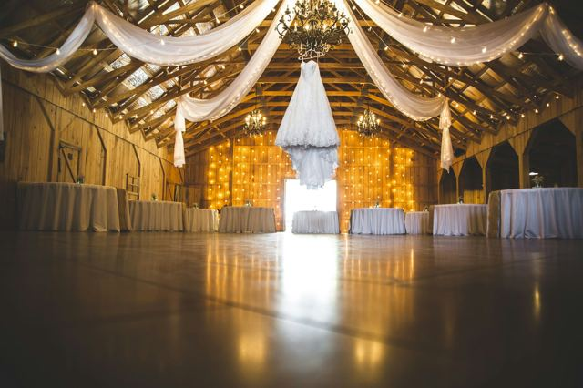

About Tallowood Ridge
A small winery, run by hand.
Tallowood Ridge started in 2004 with a few rows of Shiraz on a granite slope near Stanthorpe. Today we grow nine grape varieties on 14 hectares, make the wine in our own shed, and pour it at the cellar door seven days a week.
- We grow, pick and make every bottle on site.
- Cool nights and high ground give us crisp, lighter wines.
- The people pouring your glass helped make the wine.



22Years on the Granite Belt
14Hectares of vines
9Grape varieties
7Days a week open
Capability
What we look after
The vineyard
14 hectares of vines, picked by hand at vintage.
The winery
Small tanks and oak barrels, so each block is made on its own.
The cellar door
A timber bar, a courtyard and a lawn, open seven days.
How we work
Planning your visit.
Choose
Pick a tasting, a tour or a table.
Book
Online or by phone. Walk-ins are welcome.
Visit
Park by the barn and come to the bar.
Take home
Buy by the bottle, the case or a club box.
Reviews
What visitors say.
Friendly staff and an easy tasting. We came for an hour and stayed for lunch.
The wine club box arrived on time and the notes made it easy to pick a wine for dinner.
Our family lunch in the barn ran smoothly. The team knew what they were doing.
Good to knowLiquor licence shown hereFamily run since 2004Open seven daysDogs welcome in the courtyard
Plan your visit.
Tell us the day and how many are coming. We will reply the same day.